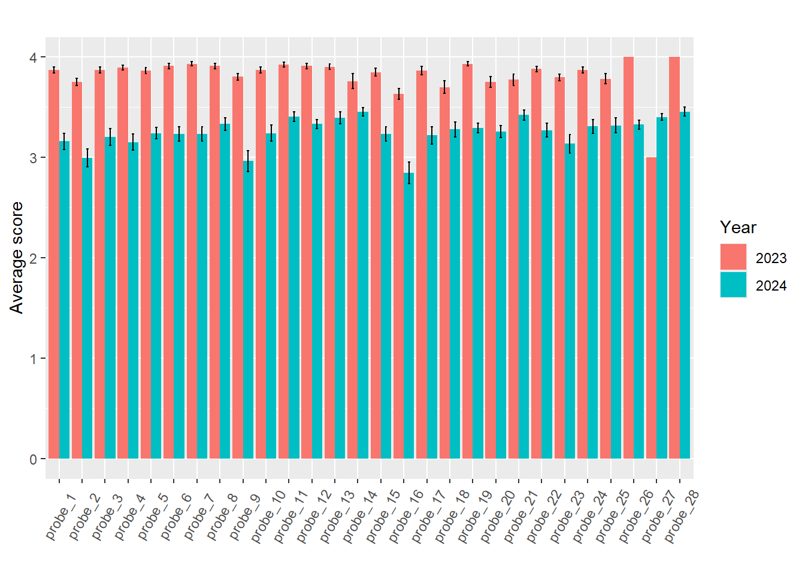
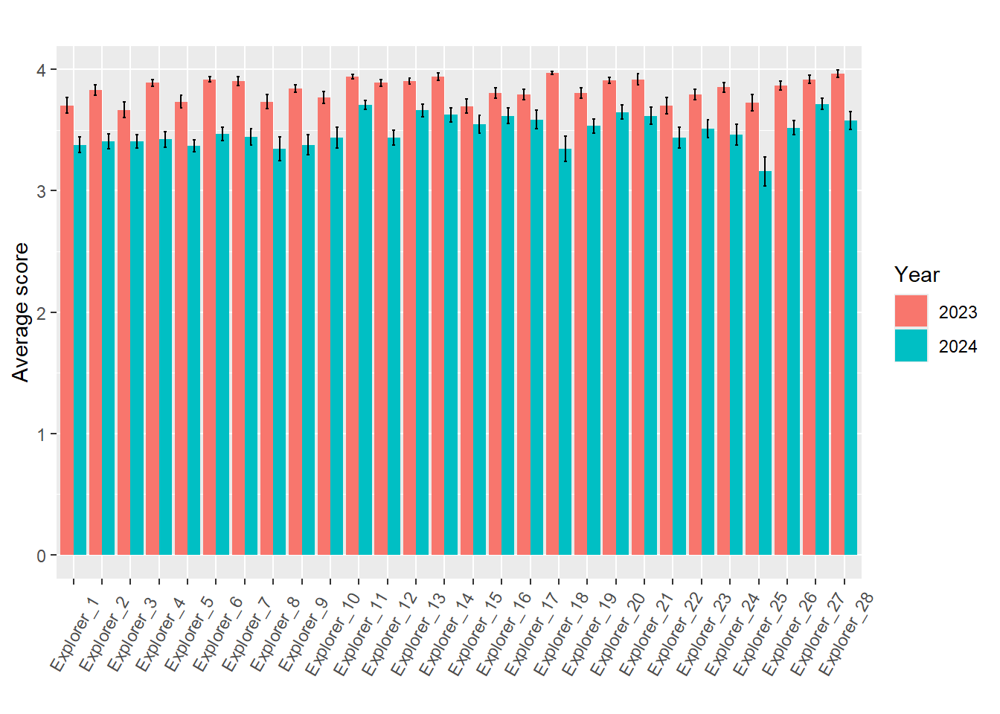
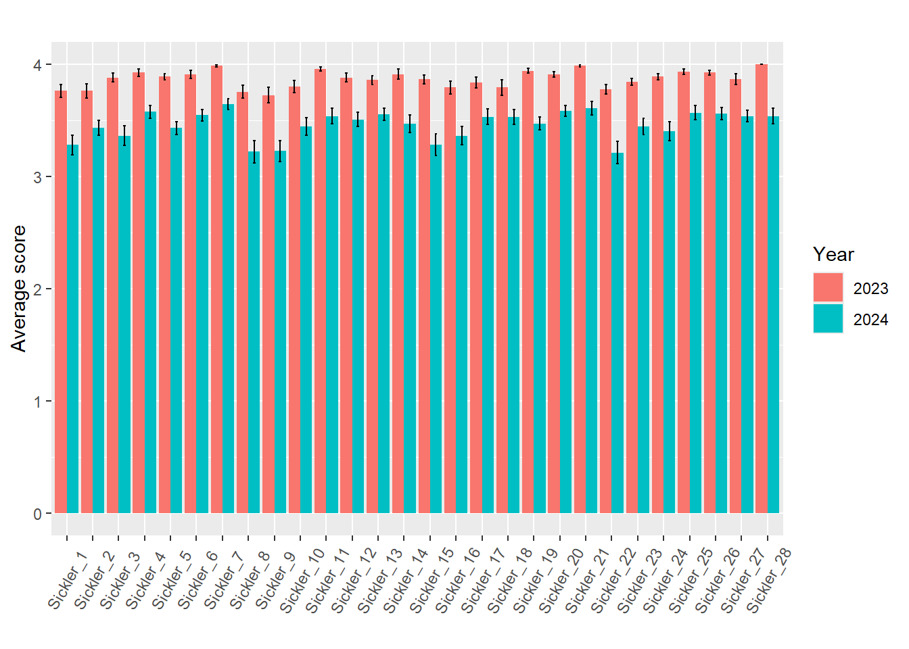
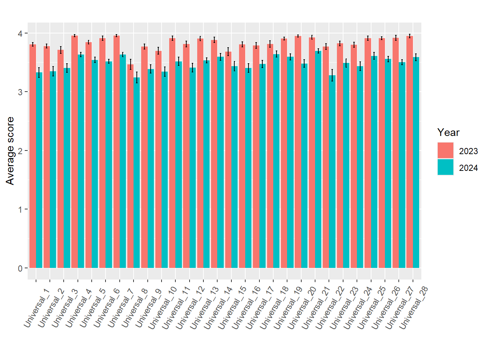
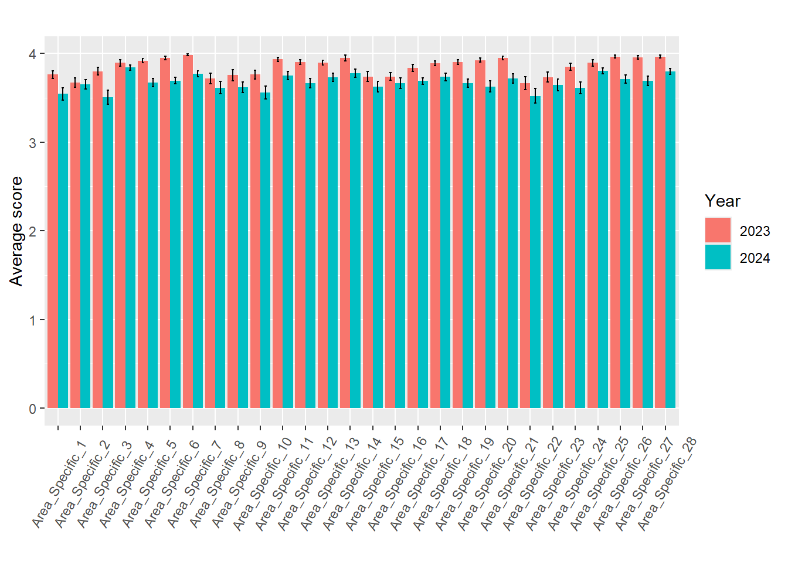

Last updated: 2025-09-08
Checks: 6 1
Knit directory: Collaborations/
This reproducible R Markdown analysis was created with workflowr (version 1.7.1). The Checks tab describes the reproducibility checks that were applied when the results were created. The Past versions tab lists the development history.
The R Markdown file has unstaged changes. To know which version of
the R Markdown file created these results, you’ll want to first commit
it to the Git repo. If you’re still working on the analysis, you can
ignore this warning. When you’re finished, you can run
wflow_publish to commit the R Markdown file and build the
HTML.
Great job! The global environment was empty. Objects defined in the global environment can affect the analysis in your R Markdown file in unknown ways. For reproduciblity it’s best to always run the code in an empty environment.
The command set.seed(20210523) was run prior to running
the code in the R Markdown file. Setting a seed ensures that any results
that rely on randomness, e.g. subsampling or permutations, are
reproducible.
Great job! Recording the operating system, R version, and package versions is critical for reproducibility.
Nice! There were no cached chunks for this analysis, so you can be confident that you successfully produced the results during this run.
Great job! Using relative paths to the files within your workflowr project makes it easier to run your code on other machines.
Great! You are using Git for version control. Tracking code development and connecting the code version to the results is critical for reproducibility.
The results in this page were generated with repository version d73d8e3. See the Past versions tab to see a history of the changes made to the R Markdown and HTML files.
Note that you need to be careful to ensure that all relevant files for
the analysis have been committed to Git prior to generating the results
(you can use wflow_publish or
wflow_git_commit). workflowr only checks the R Markdown
file, but you know if there are other scripts or data files that it
depends on. Below is the status of the Git repository when the results
were generated:
Ignored files:
Ignored: .Rhistory
Ignored: analysis/.Rhistory
Ignored: analysis/2022_Mar2_Marinho_cache/
Unstaged changes:
Modified: analysis/2025_0302_Zainab.Rmd
Note that any generated files, e.g. HTML, png, CSS, etc., are not included in this status report because it is ok for generated content to have uncommitted changes.
These are the previous versions of the repository in which changes were
made to the R Markdown (analysis/2025_0302_Zainab.Rmd) and
HTML (docs/2025_0302_Zainab.html) files. If you’ve
configured a remote Git repository (see ?wflow_git_remote),
click on the hyperlinks in the table below to view the files as they
were in that past version.
| File | Version | Author | Date | Message |
|---|---|---|---|---|
| Rmd | c65fda4 | han | 2025-09-05 | 9/5/2025 |
| html | c65fda4 | han | 2025-09-05 | 9/5/2025 |
| Rmd | 08d9767 | han | 2025-05-13 | 5/13/2025 |
| html | 08d9767 | han | 2025-05-13 | 5/13/2025 |
| Rmd | 2c646a7 | han | 2025-05-12 | 5/12/2025 |
| html | 2c646a7 | han | 2025-05-12 | 5/12/2025 |
| Rmd | 205dc6c | han | 2025-05-09 | 5/9/2025 |
| html | 205dc6c | han | 2025-05-09 | 5/9/2025 |
| Rmd | 9d9e908 | han | 2025-05-09 | 5/9/2025 |
| html | 9d9e908 | han | 2025-05-09 | 5/9/2025 |
| Rmd | d0b797a | han | 2025-05-02 | 5/2/2025 |
| html | d0b797a | han | 2025-05-02 | 5/2/2025 |
| Rmd | 5fd905a | han | 2025-05-02 | 5/2/2025 |
| html | 5fd905a | han | 2025-05-02 | 5/2/2025 |
| Rmd | 6ffc4f9 | han | 2025-05-02 | 5/2/2025 |
| html | 6ffc4f9 | han | 2025-05-02 | 5/2/2025 |
| Rmd | 2d4221d | han | 2025-05-01 | 5/1/2025 |
| Rmd | 383ddd0 | han | 2025-03-06 | 3/6/2025 |
| html | 383ddd0 | han | 2025-03-06 | 3/6/2025 |
MBSE_23=multiplesheets_without_headers((file.path(root, "../2025/202503/Zainab/23 Tablet grades seperated by exam 20250509.xlsx")))
MBSE_24=multiplesheets_without_headers((file.path(root, "..\\2025\\202503\\Zainab\\OT Research - 24 MBSE.xlsx")))` Probe only 23 Probe has 28 questions in one line
24 Probe has 4 lines per person
Columns C - I 1st row for each person is 1 - 7 2nd row per person is 8 - 14 3rd row per person is 15 - 21 4th row per person is 22 - 28
Explorer, sickle, universal, area specific is set up as the 24 probe with 4 lines per person Cumulative was not evaluated the same and should not be considered in the analysis `
side_by_side_bar_plot <- function(combined_data, variable = "probe") {
# Reshape the data from wide to long format
long_data <- combined_data %>%
pivot_longer(
cols = starts_with(paste0(variable, "_")),
names_to = "var_name",
values_to = "value"
) %>%
filter(!is.na(value))
# Create an ordered factor for correct x-axis ordering
num_vars <- ncol(combined_data) - 1 # adjust if 'year' is always last
long_data <- long_data %>%
mutate(
var_name = factor(var_name, levels = paste0(variable, "_", 1:num_vars))
)
# Summarize data
summary_data <- long_data %>%
group_by(year, var_name) %>%
summarise(
mean = mean(value, na.rm = TRUE),
se = sd(value, na.rm = TRUE) / sqrt(n()),
.groups = 'drop'
)
# Plot
fig <- ggplot(summary_data, aes(x = var_name, y = mean, fill = factor(year))) +
geom_bar(stat = "identity", position = position_dodge(width = 0.9)) +
geom_errorbar(aes(ymin = mean - se, ymax = mean + se),
position = position_dodge(width = 0.9), width = 0.2) +
labs(
title = "",
x = "",
y = "Average score",
fill = "Year"
) +
theme(axis.text.x = element_text(angle = 60, vjust = 0.5))
return(fig)
}
data_clean=function(data)
{
student_names=unique(data$...1)
data_clean <- data %>% filter(`...1` %in% student_names) %>%
arrange(factor(`...1`, levels = student_names)) %>%
select(3:9) %>%
as.matrix() %>%
t() %>%
as.vector() %>%
matrix(nrow = length(student_names), byrow = TRUE)
return(data_clean)
}
compute_pvalue=function(data1, data2, variable)
{
pvalue=numeric(); pvalue2=numeric(); pvalue3=numeric()
for (i in 1:ncol(data1))
{
if (sum(!is.na(data1[, i])) > 1 && sum(!is.na(data2[, i])) > 1) {
pvalue[i]=t.test(data1[, i], data2[, i])$p.value
pvalue2[i]=t.test(data1[, i], data2[, i], alternative ="less" )$p.value
pvalue3[i]=t.test(data1[, i], data2[, i], alternative ="greater" )$p.value
} else {
pvalue[i]="NA"
pvalue2[i]="NA"
pvalue3[i]="NA"
}
}
output=data.frame(questions=paste(variable, seq(1:ncol(data_23_clean)), sep="_"), pvalue=pvalue_adjust(pvalue), pvalue2=pvalue_adjust(pvalue2), pvalue3=pvalue_adjust(pvalue3))
return(output)
}data_23=MBSE_23$`23 Probe`
data_24=MBSE_24$`24 Probe`# check if each student has the same 4 lines
student_names=unique(data_24$...1)
num_rows=sapply(student_names, function(x) (data_24 %>% filter(`...1`==x) %>% nrow()))
sum(num_rows==4)==length(num_rows) # ensure all students have 4 rows [1] TRUEdata_23_clean=data_23[,5:32]
data_24_clean=data_clean(data_24)
compute_pvalue(data_23_clean, data_24_clean, "probe") %>%
datatable(extensions = 'Buttons',
caption = "",
options = list(dom = 'Blfrtip',
buttons = c('copy', 'csv', 'excel', 'pdf', 'print'),
lengthMenu = list(c(10,25,50,-1),
c(10,25,50,"All"))))pvalue indicates strong evidence of year 23 not
equal year 24; small pvalue2 suggests year 24 greater than
year 23; small pvalue3 suggests year 24 smaller than year
23.parameter="probe"
data_23_clean=data.frame(data_23[,5:32])
data_24_clean=data.frame(data_clean(data_24))
# Step 1: Add group labels
data_23_clean$year <- "2023"
data_24_clean$year <- "2024"
colnames(data_23_clean)=paste(parameter, seq(1:ncol(data_23_clean)), sep="_")
colnames(data_24_clean)=paste(parameter, seq(1:ncol(data_23_clean)), sep="_")
# Step 2: Combine the datasets
combined_data <- bind_rows(data_23_clean, data_24_clean)
colnames(combined_data)[ncol(combined_data)]="year"
fig=side_by_side_bar_plot(combined_data, variable=parameter)
fig
data_23=MBSE_23$`23 Explorer`
data_24=MBSE_24$`24 Explorer`# check if each student has the same 4 lines
student_names=unique(data_24$...1)
num_rows=sapply(student_names, function(x) (data_24 %>% filter(`...1`==x) %>% nrow()))
if (all(num_rows == 4)) print("Correct") else which(num_rows != 4)[1] "Correct"student_names_23=unique(data_23$...1)
num_rows=sapply(student_names_23, function(x) (data_23 %>% filter(`...1`==x) %>% nrow()))
if (all(num_rows == 4)) print("Correct") else student_names_23[which(num_rows != 4)] # ensure all students have 4 rows [1] "Correct"data_23_clean=data_clean(data_23)
data_24_clean=data_clean(data_24)
ncol(data_23_clean)==ncol(data_24_clean)[1] TRUEcompute_pvalue(data_23_clean, data_24_clean, "Explorer") %>%
datatable(extensions = 'Buttons',
caption = "",
options = list(dom = 'Blfrtip',
buttons = c('copy', 'csv', 'excel', 'pdf', 'print'),
lengthMenu = list(c(10,25,50,-1),
c(10,25,50,"All"))))parameter="Explorer"
data_23_clean=data.frame(data_clean(data_23))
data_24_clean=data.frame(data_clean(data_24))
# Step 1: Add group labels
data_23_clean$year <- "2023"
data_24_clean$year <- "2024"
colnames(data_23_clean)=paste(parameter, seq(1:ncol(data_23_clean)), sep="_")
colnames(data_24_clean)=paste(parameter, seq(1:ncol(data_23_clean)), sep="_")
# Step 2: Combine the datasets
combined_data <- bind_rows(data_23_clean, data_24_clean)
colnames(combined_data)[ncol(combined_data)]="year"
fig=side_by_side_bar_plot(combined_data, variable=parameter)
fig
data_23=MBSE_23$`23 Sickle`
data_24=MBSE_24$`24 Sickle`# check if each student has the same 4 lines
student_names=unique(data_24$...1)
num_rows=sapply(student_names, function(x) (data_24 %>% filter(`...1`==x) %>% nrow()))
if (all(num_rows == 4)) print("Correct") else student_names[which(num_rows != 4)] # ensure all students have 4 rows[1] "Correct"student_names_23=unique(data_23$...1)
num_rows=sapply(student_names_23, function(x) (data_23 %>% filter(`...1`==x) %>% nrow()))
if (all(num_rows == 4)) print("Correct") else student_names_23[which(num_rows != 4)] # ensure all students have 4 rows [1] "Correct"data_23_clean=data_clean(data_23)
data_24_clean=data_clean(data_24)
ncol(data_23_clean)==ncol(data_24_clean)[1] TRUEcompute_pvalue(data_23_clean, data_24_clean, "Sickle") %>%
datatable(extensions = 'Buttons',
caption = "",
options = list(dom = 'Blfrtip',
buttons = c('copy', 'csv', 'excel', 'pdf', 'print'),
lengthMenu = list(c(10,25,50,-1),
c(10,25,50,"All"))))parameter="Sickler"
data_23_clean=data.frame(data_clean(data_23))
data_24_clean=data.frame(data_clean(data_24))
# Step 1: Add group labels
data_23_clean$year <- "2023"
data_24_clean$year <- "2024"
colnames(data_23_clean)=paste(parameter, seq(1:ncol(data_23_clean)), sep="_")
colnames(data_24_clean)=paste(parameter, seq(1:ncol(data_23_clean)), sep="_")
# Step 2: Combine the datasets
combined_data <- bind_rows(data_23_clean, data_24_clean)
colnames(combined_data)[ncol(combined_data)]="year"
fig=side_by_side_bar_plot(combined_data, variable=parameter)
fig
data_23=MBSE_23$`23 Universal`
data_24=MBSE_24$`24 Universal`# check if each student has the same 4 lines
student_names=unique(data_24$...1)
num_rows=sapply(student_names, function(x) (data_24 %>% filter(`...1`==x) %>% nrow()))
if (all(num_rows == 4)) print("Correct") else student_names[which(num_rows != 4)] # ensure all students have 4 rows[1] "Correct"student_names_23=unique(data_23$...1)
num_rows=sapply(student_names_23, function(x) (data_23 %>% filter(`...1`==x) %>% nrow()))
if (all(num_rows == 4)) print("Correct") else student_names_23[which(num_rows != 4)] # ensure all students have 4 rows [1] "Correct"data_23_clean=data_clean(data_23)
data_24_clean=data_clean(data_24)
ncol(data_23_clean)==ncol(data_24_clean)[1] TRUEcompute_pvalue(data_23_clean, data_24_clean, "Universal") %>%
datatable(extensions = 'Buttons',
caption = "",
options = list(dom = 'Blfrtip',
buttons = c('copy', 'csv', 'excel', 'pdf', 'print'),
lengthMenu = list(c(10,25,50,-1),
c(10,25,50,"All"))))parameter="Universal"
data_23_clean=data.frame(data_clean(data_23))
data_24_clean=data.frame(data_clean(data_24))
# Step 1: Add group labels
data_23_clean$year <- "2023"
data_24_clean$year <- "2024"
colnames(data_23_clean)=paste(parameter, seq(1:ncol(data_23_clean)), sep="_")
colnames(data_24_clean)=paste(parameter, seq(1:ncol(data_23_clean)), sep="_")
# Step 2: Combine the datasets
combined_data <- bind_rows(data_23_clean, data_24_clean)
colnames(combined_data)[ncol(combined_data)]="year"
fig=side_by_side_bar_plot(combined_data, variable=parameter)
fig
data_23=MBSE_23$`23 Area Specific`
data_24=MBSE_24$`24 Area Specific`# check if each student has the same 4 lines
student_names=unique(data_24$...1)
num_rows=sapply(student_names, function(x) (data_24 %>% filter(`...1`==x) %>% nrow()))
if (all(num_rows == 4)) print("Correct") else student_names[which(num_rows != 4)] # ensure all students have 4 rows[1] "Correct"student_names_23=unique(data_23$...1)
num_rows=sapply(student_names_23, function(x) (data_23 %>% filter(`...1`==x) %>% nrow()))
if (all(num_rows == 4)) print("Correct") else student_names_23[which(num_rows != 4)] # ensure all students have 4 rows [1] "Correct"data_23_clean=data_clean(data_23)
data_24_clean=data_clean(data_24)
ncol(data_23_clean)==ncol(data_24_clean)[1] TRUEcompute_pvalue(data_23_clean, data_24_clean, "Area_Specific") %>%
datatable(extensions = 'Buttons',
caption = "",
options = list(dom = 'Blfrtip',
buttons = c('copy', 'csv', 'excel', 'pdf', 'print'),
lengthMenu = list(c(10,25,50,-1),
c(10,25,50,"All"))))parameter="Area_Specific"
data_23_clean=data.frame(data_clean(data_23))
data_24_clean=data.frame(data_clean(data_24))
# Step 1: Add group labels
data_23_clean$year <- "2023"
data_24_clean$year <- "2024"
colnames(data_23_clean)=paste(parameter, seq(1:ncol(data_23_clean)), sep="_")
colnames(data_24_clean)=paste(parameter, seq(1:ncol(data_23_clean)), sep="_")
# Step 2: Combine the datasets
combined_data <- bind_rows(data_23_clean, data_24_clean)
colnames(combined_data)[ncol(combined_data)]="year"
fig=side_by_side_bar_plot(combined_data, variable=parameter)
fig
data_23=MBSE_23$`23 Cumulative`
data_24=MBSE_24$`24 Cumulative`# check if each student has the same 4 lines
student_names=unique(data_24$...1)
num_rows=sapply(student_names, function(x) (data_24 %>% filter(`...1`==x) %>% nrow()))
if (all(num_rows == 5)) print("Correct") else student_names[which(num_rows != 5)] # ensure all students have 4 rows[1] "Correct"student_names_23=unique(data_23$...1)
num_rows=sapply(student_names_23, function(x) (data_23 %>% filter(`...1`==x) %>% nrow()))
if (all(num_rows == 5)) print("Correct") else student_names_23[which(num_rows != 5)] # ensure all students have 4 rows [1] "#006180201" "#006255166" "#006151065" "#006254723" "#006273143"
[6] "#006273074" "#006145792" "#006180655" "#006035789" "#006276962"
[11] "#006253753" "#006200417" "#006275410" "#006273130" "#006273137"
[16] "#006277204"data_24_clean <- data_24 %>%
filter(`...1` %in% student_names) %>%
arrange(factor(`...1`, levels = student_names)) %>%
select(3:9) %>%
as.matrix() %>%
t() %>%
as.vector() %>%
matrix(nrow = length(student_names), byrow = TRUE)
pvalue=numeric()
for (i in 1:ncol(data_23_clean))
{
if (sum(!is.na(data_23_clean[, i])) > 1 && sum(!is.na(data_24_clean[, i])) > 1) {
pvalue[i]=t.test(data_23_clean[, i], data_24_clean[, i])$p.value
} else {
pvalue[i]="NA"
}
}
data.frame(questions=paste("Area Specific", seq(1:ncol(data_23_clean)), sep="_"), pvalue=pvalue_adjust(pvalue))%>%
datatable(extensions = 'Buttons',
caption = "",
options = list(dom = 'Blfrtip',
buttons = c('copy', 'csv', 'excel', 'pdf', 'print'),
lengthMenu = list(c(10,25,50,-1),
c(10,25,50,"All"))))perio_community=read_xlsx((file.path(root, "..\\2025\\202503\\Zainab\\Perio Community of Practice_March 4, 2025_14.27 updated manual_cleaned.xlsx")))library(rstatix)
# -------------------------------
# 1. Reshape data into long format
# -------------------------------
df_long <- perio_community %>%
pivot_longer(
cols = starts_with("Q"),
names_to = "question",
values_to = "response"
)
# -------------------------------
# 2. Counts for bar plots
# -------------------------------
counts <- df_long %>%
group_by(question, time, response) %>%
summarise(n = n(), .groups = "drop")
# -------------------------------
# 3. Bar plots (pre vs post)
# -------------------------------
#ggplot(counts, aes(x = response, y = n, fill = time)) +
# geom_bar(stat = "identity", position = "dodge") +
# facet_wrap(~ question, scales = "free_x") +
# theme_bw() +
# theme(axis.text.x = element_text(angle = 45, hjust = 1)) +
# labs(x = "Response", y = "Count", title = "Pre vs Post Responses")
counts %>%
datatable(extensions = 'Buttons',
caption = "",
options = list(dom = 'Blfrtip',
buttons = c('copy', 'csv', 'excel', 'pdf', 'print'),
lengthMenu = list(c(10,25,50,-1),
c(10,25,50,"All"))))# -------------------------------
# 4a. McNemar test (binary collapse)
# -------------------------------
df_long <- df_long %>%
mutate(question = sub(":.*", "", question)) %>% filter(response != "N/A")
questions=unique(df_long$question)
pvalue=numeric(); k=0
variable=c()
for (i in 1:length(questions))
{
count=df_long %>% filter(question==questions[i])
if (length(unique(count$time))==2)
{
common_response=intersect(count %>% filter(time=="pre") %>% select(response) %>% pull(), count %>% filter(time=="post") %>% select(response) %>% pull())
for (j in 1:length(common_response))
{
sub_count=c(count %>% filter(time=="pre" & response ==common_response[j]) %>% nrow(), count %>% filter(time=="post" & response ==common_response[j]) %>% nrow())
k=k+1
pvalue[k]=binom.test(sub_count)$p.val
variable[k]=paste0(questions[i], ":", common_response[j])
}
}
}
data.frame(variable, pvalue=pvalue_adjust(pvalue))%>%
datatable(extensions = 'Buttons',
caption = "",
options = list(dom = 'Blfrtip',
buttons = c('copy', 'csv', 'excel', 'pdf', 'print'),
lengthMenu = list(c(10,25,50,-1),
c(10,25,50,"All"))))
sessionInfo()R version 4.3.2 (2023-10-31 ucrt)
Platform: x86_64-w64-mingw32/x64 (64-bit)
Running under: Windows 11 x64 (build 26100)
Matrix products: default
locale:
[1] LC_COLLATE=English_United States.utf8
[2] LC_CTYPE=English_United States.utf8
[3] LC_MONETARY=English_United States.utf8
[4] LC_NUMERIC=C
[5] LC_TIME=English_United States.utf8
time zone: America/Chicago
tzcode source: internal
attached base packages:
[1] grid stats graphics grDevices utils datasets methods
[8] base
other attached packages:
[1] VennDiagram_1.7.3 futile.logger_1.4.3 condsurv_1.0.0
[4] devtools_2.4.5 usethis_3.1.0 tidycmprsk_1.1.0
[7] gtsummary_2.0.4 ggsurvfit_1.1.0 irr_0.84.1
[10] lpSolve_5.6.23 readxl_1.4.3 cowplot_1.1.3
[13] matrixStats_1.5.0 gridExtra_2.3 DT_0.33
[16] rstatix_0.7.2 ggpubr_0.6.0 kableExtra_1.4.0
[19] lubridate_1.9.4 forcats_1.0.0 stringr_1.5.1
[22] dplyr_1.1.4 purrr_1.0.2 readr_2.1.4
[25] tidyr_1.3.1 tibble_3.2.1 ggplot2_3.5.1
[28] tidyverse_2.0.0 rprojroot_2.0.4
loaded via a namespace (and not attached):
[1] formatR_1.14 remotes_2.5.0 rlang_1.1.2
[4] magrittr_2.0.3 git2r_0.35.0 compiler_4.3.2
[7] systemfonts_1.2.1 vctrs_0.6.5 profvis_0.4.0
[10] pkgconfig_2.0.3 fastmap_1.2.0 backports_1.5.0
[13] ellipsis_0.3.2 labeling_0.4.3 promises_1.3.2
[16] rmarkdown_2.29 sessioninfo_1.2.2 tzdb_0.4.0
[19] xfun_0.50.6 cachem_1.1.0 jsonlite_1.8.9
[22] later_1.4.1 broom_1.0.7 R6_2.6.1
[25] bslib_0.9.0 stringi_1.8.3 car_3.1-3
[28] pkgload_1.4.0 jquerylib_0.1.4 cellranger_1.1.0
[31] Rcpp_1.0.11 knitr_1.49 httpuv_1.6.15
[34] Matrix_1.6-1.1 splines_4.3.2 timechange_0.3.0
[37] tidyselect_1.2.1 rstudioapi_0.17.1 abind_1.4-8
[40] yaml_2.3.8 miniUI_0.1.1.1 pkgbuild_1.4.6
[43] lattice_0.21-9 shiny_1.10.0 withr_3.0.2
[46] evaluate_1.0.3 lambda.r_1.2.4 survival_3.8-3
[49] urlchecker_1.0.1 xml2_1.3.6 pillar_1.10.1
[52] carData_3.0-5 whisker_0.4.1 generics_0.1.3
[55] hms_1.1.3 munsell_0.5.1 scales_1.3.0
[58] xtable_1.8-4 glue_1.8.0 tools_4.3.2
[61] ggsignif_0.6.4 fs_1.6.5 crosstalk_1.2.1
[64] colorspace_2.1-0 Formula_1.2-5 cli_3.6.2
[67] workflowr_1.7.1 futile.options_1.0.1 viridisLite_0.4.2
[70] svglite_2.1.3 gtable_0.3.6 sass_0.4.9
[73] digest_0.6.33 farver_2.1.2 htmlwidgets_1.6.4
[76] memoise_2.0.1 htmltools_0.5.8.1 lifecycle_1.0.4
[79] mime_0.12